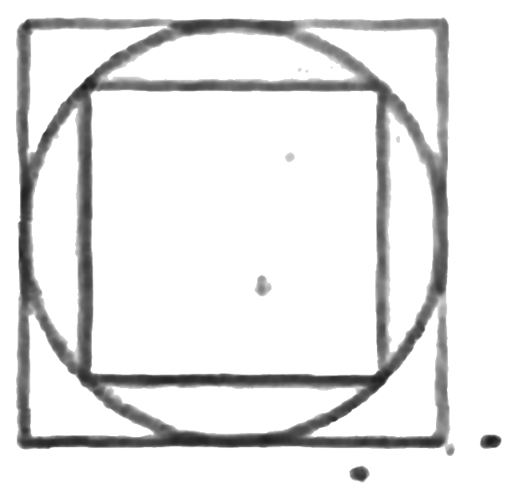
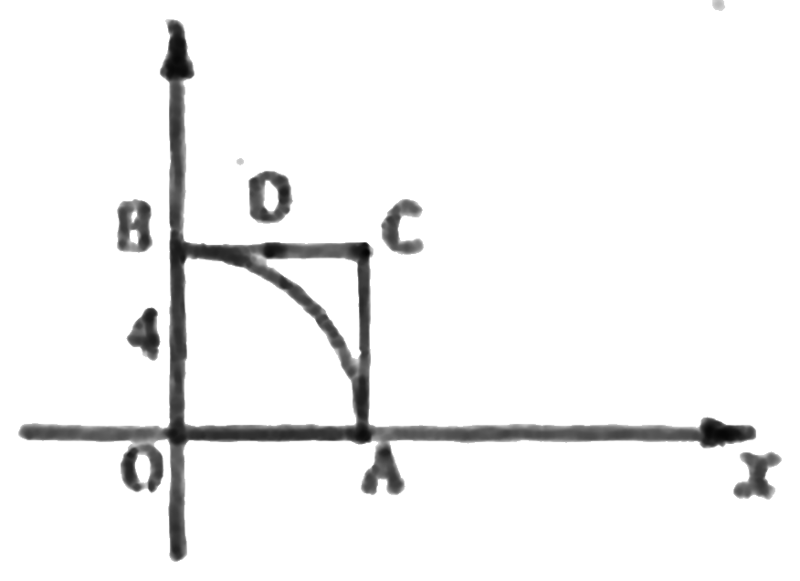
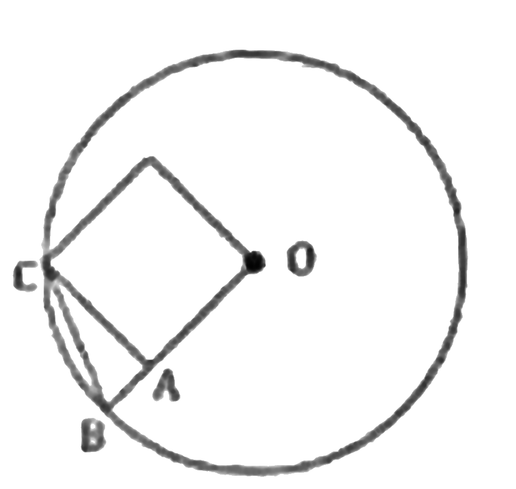

בסרטוט שלפניכם ריבוע החסום במעגל החסום בריבוע. נתון כי רדיוסו של המעגל הוא r.
על פי נתונים אלו ונתוני הסרטוט, השטח האפורהשטח הלבן = ?
⚠ התשובות קטנות ומטושטשות – נקראו בקירוב.

אביב ומשה יוצאים לריצת לילה. אביב רץ מנקודה B לנקודה A לאורך הקשת המסומנת. משה רץ מנקודה A לנקודה C ומשם לנקודה D.
אם נתון כי אביב ומשה עברו את אותו המרחק, מה המרחק כעת בין אביב למשה?
לקראת השתתפות במחנה סוף השנה בחרה המורה מחצית מתלמידי הכיתה: ⅓ מהבנות ו־60% מהבנים.
אם בכיתה 20 בנים, כמה בנות יש בכיתה?
לכל שלושה מספרים x, y ו־z הוגדרה הפעולה $(x, y, z) כך: ההפרש בין שורש המספר הגדול מבין השלושה לבין ריבוע המספר הקטן מבין השלושה.
$( $(81,49,3) , $(16,121,√10) , $(√3,4,144) ) = ?

בסרטוט שלפניכם מעגל שמרכזו O ורדיוסו 1. בתוך המעגל נמצא ריבוע שקודקוד אחד שלו (קודקוד C) מונח על היקף המעגל, והקודקוד הנגדי שלו מונח על מרכז המעגל. הנקודה B נמצאת על המשך הצלע AO והיא מונחת על היקפו של המעגל.
נתון: AB = ½BC
לאור נתונים אלו ונתוני הסרטוט, שטח משולש ABCשטח הריבוע = ?
a, x ו־y הם מספרים שלמים, 1 < a. נתון: (aˣ · a²ʸ)ˣ = (1aʸ)ʸ
איזו מהטענות הבאות נובעת בהכרח מהנתונים?
הביטוי [שבר קטן – לא קריא בסרטון] שווה בקירוב ל־
⚠ הביטוי עצמו מטושטש לחלוטין בסרטון – יש לבדוק בספר (עמוד 34).